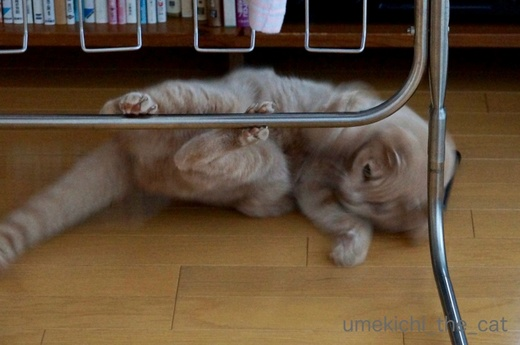
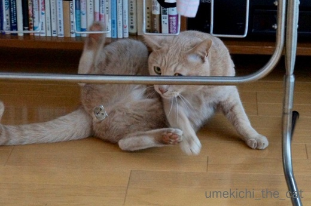
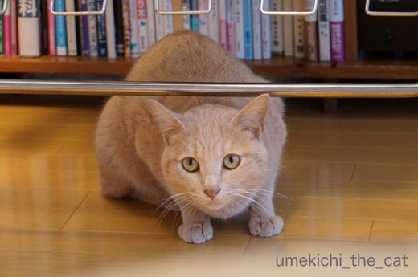
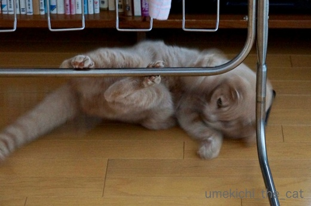
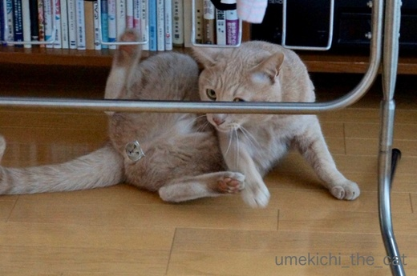
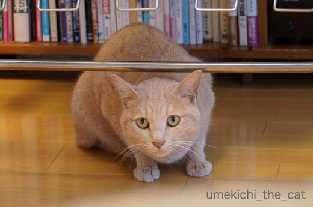

ポールダンス [梅吉]
突然洗濯物干しでポールダンスを始める梅吉さん。


なかなかの足使い、回転の速度も安定しているようです。

スピードも出てきましたね＾＾
でも、ポールダンスに足りないのは・・・

そう！セクスィ〜さ、ですよねーＯ(≧▽≦)Ｏ

![[猫]](https://blog.ss-blog.jp/_images_e/101.gif) きまったやろか
きまったやろか![[ぴかぴか（新しい）]](https://blog.ss-blog.jp/_images_e/150.gif)
はい＾＾ぶら下がる洗濯物がなければなお良かったんですけどねー。
ここはエアコン温風の吹き付ける場所。
フローリングがあったまって気持ちが良いのか梅吉がコロンコロンと転がります。
せっかくの温風なのでお洗濯物を乾かそうと物干しを持ってくると面白いのか
ポールに絡みついたり更にノッてくると物干しに登り始めます (^▽^;)
グラグラ揺れて梅吉が落ちるのも物干しが壊れるのも怖いので
地上でのダンスだけにしていただきたい！
 ↑ガブッと一押し↑
↑ガブッと一押し↑
近くだからそのうち行くでしょう、と出掛けずにいた近所の神社の年始の行事。
今年は4日、7日と出掛けてきました。
4日は踏歌神事。
こちらを向いた青の衣装の男性が蛭子さんで背中を向けた橙の衣装が大黒さん。
ふたりがそれぞれ「ふくろもち」「おおともよ」と掛け合いをします。
これが大阪のしゃべくり漫才の元になったのだとか。
このあと巫女さんが白拍子・熊野舞を舞って神事は終了。
このあと餅まきがあります。
福餅をゲットしましたー！偶然足元に転がってきたのをすかさず拾いましたよ＾＾
7日は白馬神事（あおうましんじ）。
神馬、白雪号が活躍しますよー！
白雪号は年末年始の行事と神社の例大祭のある真夏に普段快適に過ごされている
北海道は函館の牧場からやってくるのですが大阪が嫌いみたいなんですよ(⌒_⌒;
大阪にやってくると神社敷地内の厩舎においでになるのですが
誇り高き神馬なので参詣客にはいっさい目もくれずいつも暗がりで壁を見つめていらっしゃいます。
全身から「わたし、はやくかいてきな 北海道に かえりたい！」とメッセージが出ているようなwww
年に二回必ず厩舎は覗くのですが今まで歩いているのを見たことがなかったので
ギャロップする白雪号にちょっと感動！頑張ってるじゃない！！
この写真は神殿にむかってお辞儀をするところ。
そのあとに４つある神殿を二回めぐるのですが、終わりころになると
「もうおわったっしょ！わたし かえるーーー！！！」と少々ご立腹のご様子でした。
その気持ち、ちょっと分かるかも。
白雪さん、お疲れ様ー＾＾


なかなかの足使い、回転の速度も安定しているようです。

スピードも出てきましたね＾＾
でも、ポールダンスに足りないのは・・・

そう！セクスィ〜さ、ですよねーＯ(≧▽≦)Ｏ

はい＾＾ぶら下がる洗濯物がなければなお良かったんですけどねー。
ここはエアコン温風の吹き付ける場所。
フローリングがあったまって気持ちが良いのか梅吉がコロンコロンと転がります。
せっかくの温風なのでお洗濯物を乾かそうと物干しを持ってくると面白いのか
ポールに絡みついたり更にノッてくると物干しに登り始めます (^▽^;)
グラグラ揺れて梅吉が落ちるのも物干しが壊れるのも怖いので
地上でのダンスだけにしていただきたい！
近くだからそのうち行くでしょう、と出掛けずにいた近所の神社の年始の行事。
今年は4日、7日と出掛けてきました。
4日は踏歌神事。
こちらを向いた青の衣装の男性が蛭子さんで背中を向けた橙の衣装が大黒さん。
ふたりがそれぞれ「ふくろもち」「おおともよ」と掛け合いをします。
これが大阪のしゃべくり漫才の元になったのだとか。
このあと巫女さんが白拍子・熊野舞を舞って神事は終了。
このあと餅まきがあります。
福餅をゲットしましたー！偶然足元に転がってきたのをすかさず拾いましたよ＾＾
7日は白馬神事（あおうましんじ）。
神馬、白雪号が活躍しますよー！
白雪号は年末年始の行事と神社の例大祭のある真夏に普段快適に過ごされている
北海道は函館の牧場からやってくるのですが大阪が嫌いみたいなんですよ(⌒_⌒;
大阪にやってくると神社敷地内の厩舎においでになるのですが
誇り高き神馬なので参詣客にはいっさい目もくれずいつも暗がりで壁を見つめていらっしゃいます。
全身から「わたし、はやくかいてきな 北海道に かえりたい！」とメッセージが出ているようなwww
年に二回必ず厩舎は覗くのですが今まで歩いているのを見たことがなかったので
ギャロップする白雪号にちょっと感動！頑張ってるじゃない！！
この写真は神殿にむかってお辞儀をするところ。
そのあとに４つある神殿を二回めぐるのですが、終わりころになると
「もうおわったっしょ！わたし かえるーーー！！！」と少々ご立腹のご様子でした。
その気持ち、ちょっと分かるかも。
白雪さん、お疲れ様ー＾＾

カフェオレ色の梅吉

梅吉 2023年8月10日 永眠


梅吉と出会った譲渡会

犬猫の理由なき殺処分ゼロ
妄想広告
UMEKICHI 光

爆発的に早い！
時々攻撃的！
Thanks to Mr.Boss365
爆発的に早い！
時々攻撃的！
Thanks to Mr.Boss365

梅吉さん。セクスィ～♡
おばちゃん。恥ずかしくて手で目を隠しちゃったわー。
指と指の間はバッチリ開いてたけどｗ
今年もバッチリ、キメキメの梅吉さんですね＼(^o^)／
ところで、白雪さんのお気持ち、わかるわぁ。
上京したての若かりし頃、アタシもそうだった。
東京はおっかね、ウチさ帰りてぇー……、なんてね。
遅ればせながら、今年もどうぞよろしくお願いします(^^♪
by morichan (2018-01-09 15:37)
梅吉さんのポールダンス♪
目が離せませんよぉ～(#^.^#)
by きぃ (2018-01-09 16:47)
梅吉さんちゃんとポールを掴んでますよね。これなら綱渡りもいけそう。うちではゴンが物干しの上を歩いてグラグラ揺らして、洗濯物を引きはがしながら落ちています。馬鹿者です。
by zombiekong (2018-01-09 17:54)
梅吉さん、上手に肉球でポールを挟んでますね(*^▽^*)
楽しいけれど洗濯物の巻き添えはご勘弁を～^^;
白雪さん、真夏の蒸し暑い大阪が最悪なのは同感ですが、お正月はこちらの方があたたかくていいかもよ？！^^
真っ白なのに「あおうま」なんですね！
by ゆきち (2018-01-09 18:05)
梅吉さんポールで遊んでいますね！
楽しそうですね(^^)
by ma2ma2 (2018-01-09 19:44)
梅吉さん、思わぬところで見事なポールダンス！
ちゃんと掴んでますね♪ ‥洗濯物が落ちるのだけは～～＾＾；
神馬、素敵ですね～写真だけでも見られて嬉しいです。
たてがみ振っているのも美しいけど、じつは不機嫌？
そ、そりゃあ、いつも暮らしている所が良いですよね～きっと広々してるし＾＾；
by sana (2018-01-09 20:03)
梅吉さん、さすがですね～！
肉球がかわいいです(^^)
by kou (2018-01-09 21:08)
はい、笑わせていただきましたよ〜
ポールを掴んで器用ですね。
それに充分、セクスィ〜ですよ（笑）
『きまったやろか』モチ、決まってますぜ〜
by kiki (2018-01-09 21:14)
鉄パイプも温かいのかなあ。^^;
白馬さん、お勤めご苦労様ですー。
それにしても、「白馬神事」と書いて”あおうましんじ”と読むなんて知りませんでした。（恥）
by yes_hama (2018-01-09 21:32)
梅吉さん、うまく掴んでますね〜。
次は綱渡りかしら？
白馬さん、綺麗。
神事お疲れ様でした。
by nachic (2018-01-09 22:37)
梅吉さん、ナイス！
やっぱ、ニャンコって面白いですね。
「きまったやろか」もナイスキャプションです！
近所の神社とは、住吉大社ですよね！？
三が日に初詣に行くと、人だらけで大変ですが、
少しずらすだけで大違いのようですね。
伝統の神事も見ることが出来るし、
こりゃ、えーですな。
by うめむす (2018-01-10 00:15)
うちの子なら洗濯物を落として遊びますけどねぇ。
梅吉さん、ちゃんとわきまえてますね＾＾
北海道から出張とは、お馬さんも大変でしょうね＾＾；
by ぽちの輔 (2018-01-10 07:36)
おぉ、梅吉さんカッコイイ*\(^o^)/*
同じ寝転ぶのでもうちの大御所の緩さとは全然違う〜( ^ω^ )
女性ファンだけでなく男性ファンの心も鷲掴みですね♪( ´▽｀)
by ニッキー (2018-01-10 08:31)
北海道から大阪に！
まるでちぃさんのようではないですか(笑)
そうだよねー。
北海道は広くて快適だよねーと、妙にうなずいてしまったわｗｗ
白雪号ちゃんにとっては。神事なんて正直しったこっちゃないよ！って感じだよね(笑)
人間の都合でごめんね^^;
梅吉君のダンス、すごいどんなかんじなのか想像出来るよ～
動いてる梅吉君に今年も会いたいなあ～
by リュカ (2018-01-10 10:05)
梅吉くんの股間ｗ小さな梅吉くんのお顔に笑っちゃったよ～！
もぉ～！ちぃさんったらｗ
そしてやっと言えた！今年もよろしくお願いいたします(^-^)
白雪さんは行事の時だけ大阪へやってくるのね。
その割には十分すぎる活躍っぷり。お疲れさまでした。
でも早く済ませて帰りたいのが本音だよね。
家の子だったら絶対に貸し出せないもの。
まりもなんてしょんぼりしちゃって地面見つめちゃうと思う。
そして動けなくて引きずられちゃうの。・・・泣けてきたｗ
by emi (2018-01-10 12:08)
梅吉くん十分セクスィ～♡ですよ。
うちも室内干しすると洗濯物の間と間に入ってますよ(^.^)
by palpal (2018-01-10 14:40)
かくさんといて～(〃ω〃) ｷｬｧ♪
by Ginger (2018-01-10 15:06)
梅吉さんのスピード感あふれるダンス。
お見事です。
終わった後の「どーや」表情が最高です(^^;
梅吉さん、ありがとうございました(^^)
by riverwalk (2018-01-10 21:28)
見事なポールダンスを披露してくださった
梅吉さんに、新年のおひねりを・・
あげたってください（ｍ＾＾ｍ）。
大事なところのシール、なんだろうと拡大
して見つめてしまいました。ｺﾞﾒﾝﾅｻｲ♡
by うりくま (2018-01-10 22:06)
しばらくネットがつながらなかったので
遅くなりましたが、本年もよろしくお願いいたしますm(__)m
梅吉さんセクシー、アンド自主規制に笑ってしまいました。
洗濯物はご無事だったかな？
by ふにゃいの (2018-01-10 23:10)
梅吉さん、素晴らしいステージを見つけましたね(^_-)-☆
なかなかセクシーな、開脚( ´艸｀)
シールがいいですね。
踏歌神事も白馬神事も面白そう＾＾
by マーヤ (2018-01-11 01:23)
高速梅吉さん！
お馬さん（どさんこ？）、毎回北海道から来るのですか？
出張おつかれさまです（u_u*
わたし昔、清里で白いお馬さんに乗ったことあります（*´∀｀*）
by Ja-Kou66 (2018-01-11 02:21)
おお！ポールダンス！
さすが芸達者な梅吉さん、なんでもこなしますなー(≧∀≦)
白雪号、北海道から来てるって、そりゃ大変やわ。
なんでわざわざという気もしますが、
どうせなら、串カツでも食って、
大阪を満喫して帰って欲しいもんです(^_^;)
by よーちゃん (2018-01-11 09:52)
morichanさん＞
思いっきりパァー！の手でしたかっＯ(≧▽≦)Ｏ
ナイスリアクションありがとうございます！
白雪さん、
北海道→大阪と境遇が似ているせいかとっても親近感湧きます。
が、初めはかなーりカルチャーショックを受けた大阪にも
今ではすっかり馴染んでしまった私です (^▽^;)
適応能力抜群(๑˃̵ᴗ˂̵)و
もっとも広い大地は時々見たくなりますけどねー＾＾
私も、遅ればせながら今年もどうぞよろしくお願いいたします！です♪
きぃさん＞
そうそう！じーーーーっと見つめちゃってくださいＯ(≧▽≦)Ｏ
zombiekongさん＞
梅吉もめっちゃぐらぐらさせながら物干しの上を歩こうとしますよー。
そんな時はさらに揺らしてさしあげてます。
必死で振り落とされまいとしているので肉球の指使いはその時鍛えられている模様。
目指せ、綱渡り！？
ゴンちゃん、やりますねー＾＾
ゆきちさん＞
期待通り洗濯物にもちゃんと絡んでくれるので
我が家のタオルは糸がびょんびょん飛び出ています (⌒_⌒;
乾いた洗濯物も好きですが濡れた衣類も好きらしい・・・
本当にやめていただきたい！
白雪さん、おそらく北海道では冬は暖房の効いた厩舎にいらっしゃるかと。
大阪の厩舎は暖房設備は見当たらずとっても寒そうです。
セーター着せてあげたいw
元々は有色の馬＝あおうまを使っていたのが時の為政者（天皇）の好みで
白馬になり「あおうま」という呼び名だけが残ったそうですよー。
白馬、かっこいいですものね！
ma2ma2さん＞
暖かさもあって楽しく遊んでおりました＾＾
ポールもあったまっていたので肉球が気持ちよかったのかも！
sanaさん＞
写真をタテにしてみると更にそれらしく見えるんですよ。
（今気づきました・・・(^▽^;)）
洗濯物にはぶら下がろうとがんばってくださいます。泣
白馬って美しいですよね＾＾
北海道の牧場ではお預かりしている神馬に対して
それはそれは厚待遇なのだと思われます。
神馬になって良かった点、悪かった点あるものなんですね・・・
kouさん＞
肉球も披露させていただきました(^_－)☆
kikiさん＞
肉球は結構器用に物を挟みますよー。
挟むものナンバーワンは猫砂。
綺麗に足を払ったはずなのになぜか肉球の間から砂が出て来ます。
どこに隠しているんだろ・・・
yes_hamaさん＞
！！鉄パイプ、触って見ました。確かにあったかい〜。
さすが猫は温かいものに敏感だな、と改めて思いました。
古来から黒や茶色の馬をあおうま、と呼んでいたようなのですが・・・
そんなあおうまが天皇の好みで白馬になり、神事の呼び名だけがそのまま残ったようです。
私も大阪に来るまで「しろうましんじ」だと思ってましたよ (^▽^;)
nachicさん＞
うふふ、器用な肉球なので出来るようになるかもしれません＾＾
白雪さん、大切にお世話されているので容姿だけじゃなく
毛並みも綺麗でした。
お嬢様、ですよねー。
うめむすさん＞
そう！そこ、です＾＾
三が日は神殿前に近づくことも難しいですが
4日以降は普通にお参り可能となります。
それでも1月いっぱいはたくさんの人がお参りしているので
買い物帰りにネギやティッシュの箱を持ったまま敷地内を通るのは
ちょっとはばかられちゃいます。
近道なんですけどねー(^▽^;)
ぽちの輔さん＞
洗濯物を落とすのなら良いのですが
干してある物にぶら下がって遊ぼうとするので
タオル等は糸がびょんびょん出ています(^▽^;)
函館からは船？陸路？
どちらにしても長い時間。その間のストレスも大変そうです(⌒_⌒;
ニッキーさん＞
まだまだやんちゃ坊主なので大御所様のようにまったりとゆったりと、
とは出来ないようですよー (⌒_⌒;
もしかしたらずっと落ち着きのない子かもしれないw
リュカさん＞
境遇が似ているせいか白雪さんには親近感が湧いちゃって・・・
神社の厩舎は小さくて暗くて夏は暑くて冬は寒そうで
ちょとお気の毒なのよねー。
立派な厩舎にしたら少しは大阪が気に入ってくれるかと
いつも思ってますwww
宝くじが当たったらご寄進しちゃおうかしら(≧▽≦)
大阪⇆東京そう遠くはないけれどなかな行き来しないよね。
でも今年も会えると良いなぁ・・・
emiさん＞
リトル梅吉によくぞ気づいてくださいました！
おっとは「ん？そんなになってた？？」って
見直してようやく気づいていましたよ (^▽^;)
や〜んＯ(≧▽≦)Ｏ
しゃんぼりして引きずられちゃうまりもちゃんを想像してしまいました。
かわいそう！だけどその姿見て見たい！！といけない葛藤が・・・
白雪さん
神馬として何不自由ない生涯を約束されたぶん役目もあるのですよねー。
飼い猫として無理やりチューされるのが役目の梅吉みたいな(≧ω≦｡)
palpalさん＞
何するわけでもなく洗濯物の下にたたずみますよね〜。
マイナスイオンでも出てるのかしら＾＾
Gingerさん＞
チラリズムがよろしいかと(〃▽〃)
riverwalkさん＞
お正月太りもない梅吉はキレッキレのダンスを披露してくれました(^_－)☆
「ありがとう」なんて言っていただけて
「わし またがんばる」と梅吉が申しておりました＾＾
うりくまさん＞
「ちり紙」に包んだおひねりを用意いたしますよ〜＾＾
隠せばより一層注目したくなる。
新年早々シールを貼らずにはいられませんでしたwww
確信犯なワタクシ・・・(〃▽〃)
ふにゃいのさん＞
あらら、電波難民だったのですねー＾＾
こちらこそ本年もどうぞよろしくお願いいたしますm(_ _)m
洗濯物はぶら下がるもの、と思っているので
タオルからは糸がびょんびょんでています・・・
もう諦めました(꒦ິ⌑꒦ີ)
マーヤさん＞
ポールがあればそこが梅吉のステージに！
ここに物干しを置いちゃうとテレビが見られないのですが
梅吉が十分すぎる娯楽となっている我が家です＾＾
踏歌神事も白馬神事もかつては宮中行事だったようですよ。
こういうのを見ると関西の文化の奥深さを感じます。
Ja-Kou66さん＞
高速すぎてブレブレの写真しか撮れませんでしたー(^▽^;)
白雪さん、そうそう、馬種はなんでしょうね。
どさんこはもっとでっかいしサラブレットでもアラブ種でもないし・・・
でも神馬になるのだから日本原産種なのかな。
年に二回北海道から旅して来るんですよ・・・
白雪さんは道中憂鬱なんでしょうねぇ。
清里で白いお馬！
ザ・避暑地の出来事ですねー！！
よーちゃん＞
これからも芸を増やしていただきたいと思っております！
がんばれ、梅吉www
関西近郊でも馬の管理はできると思うんですけどね。
暑くて条件が悪いならせめて岐阜か長野あたりでと思うのですが
「北海道で」とのご神託でもあったのでしょうか(≧ω≦｡)
串カツの付け合わせはキャベツじゃなくて人参でキマリ！ですね！！
ちなみに私のオススメはアボガドです＾＾
by ちぃ (2018-01-11 17:51)
白馬が主役の「あおうま神事」とはこれいかに…(^^;１つお勉強になりました☆
白雪さんは普段は大阪にいらっしゃらないのですか。そりゃ人間様のご都合で、少しの時間の為に遠路はるばるじゃご立腹も仕方ないか〜お疲れさま、ありがとう←どの目線?
でも一度はお会いしてみたいな、白雪さん♪
梅吉はん、ポールダンス出来はるんや！
それはめっちゃカッコええなぁ〜！！
やっぱり若いとおしゃれな趣味なんやなー
ウチの趣味は…姉やんを従えて散歩する事やわwww
by くつしたにゃん (2018-01-12 17:45)